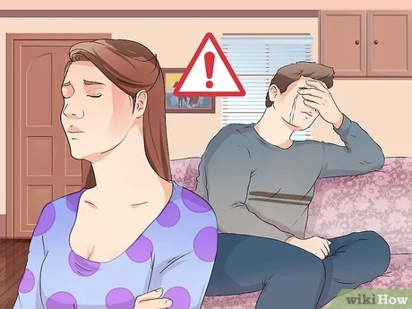
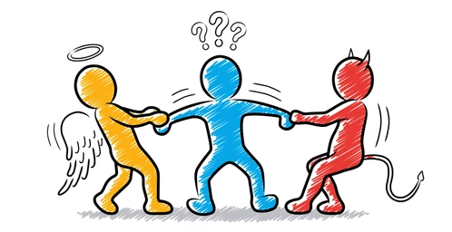

Your sister is mad at you and she will never involve again with you, however, the patients are grateful to you and give you $10000.
The patients are dead and your brother-in-law hates you, you won't se him again although your sister is grateful to you.
Time out! Due to your lack of resolution, the four patients have all died and your brother-in-law now hates you.
Next situation ->


You’re in a hospital with your sister and your brother-in-law, when four strangers appear, each needs a different organ which can be provided by your brother-in-law; he understands the situation and wants to help the strangers, however your sister disagrees.
¿What do you chose?
You agree with your brother-in-law: so you encourage him to donate his organs and save the strangers despite your sister's opinion.
You agree with your sister: prevent your brother-in-law to donate his organs, let the strangers die and keep this event in your memory forever.
For selecting an answer doubleclick your election. When you see the results press "Next situation"